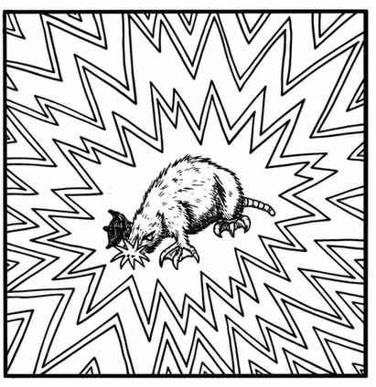

脑鼹鼠 · Brain Mole
 |
|
脑鼹鼠是体型很小、形似鼹鼠的动物，地上与地下都能见到。任何灵能活动都会吸引它们，包括模仿灵能效果的法术。若脑鼹鼠进入正在施展此类能力的生物 30 尺范围内，它就会通过灵能“钻入”对方心智，试图吸食其能量。这相当于以 121 点强度的心灵冲击攻击正在使用灵能的生物。
每个近战轮，脑鼹鼠的钻入都有 20% 的概率使不具灵能能力、却借助法术或魔法物品施展灵能效果的生物永久疯狂。停止法术或不再使用魔法物品，便会立刻解除攻击。受到攻击的灵能者必须离开脑鼹鼠的作用范围，或杀死它，才能制止其继续钻入心智。